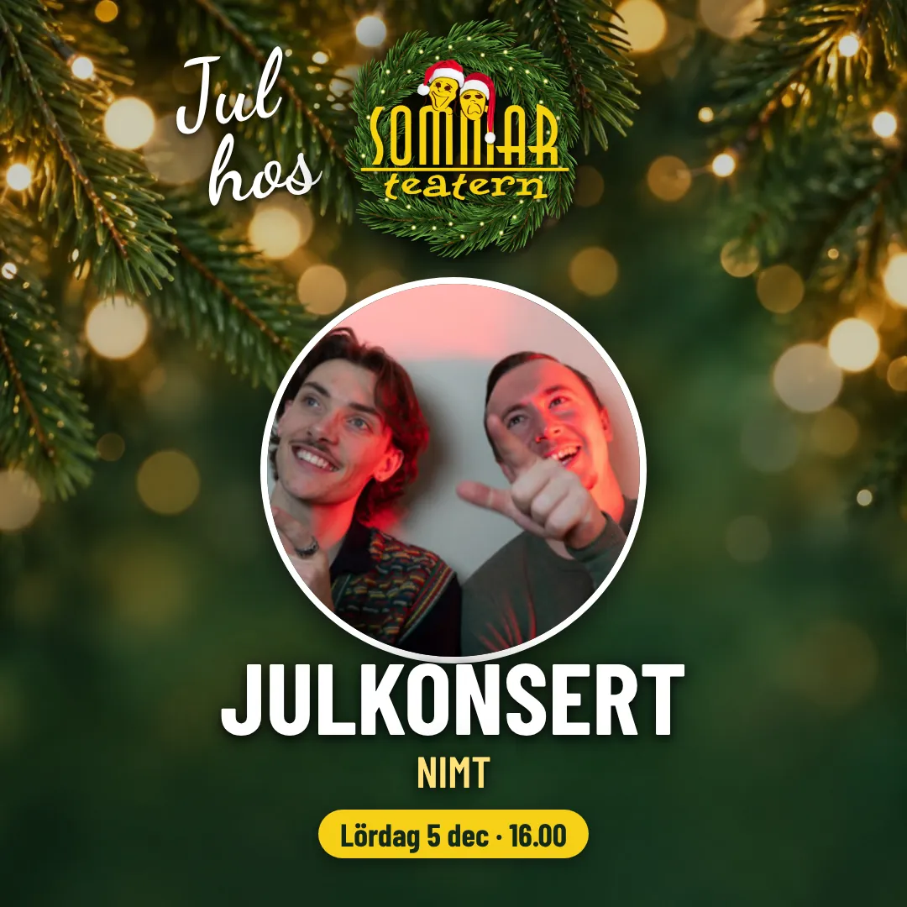
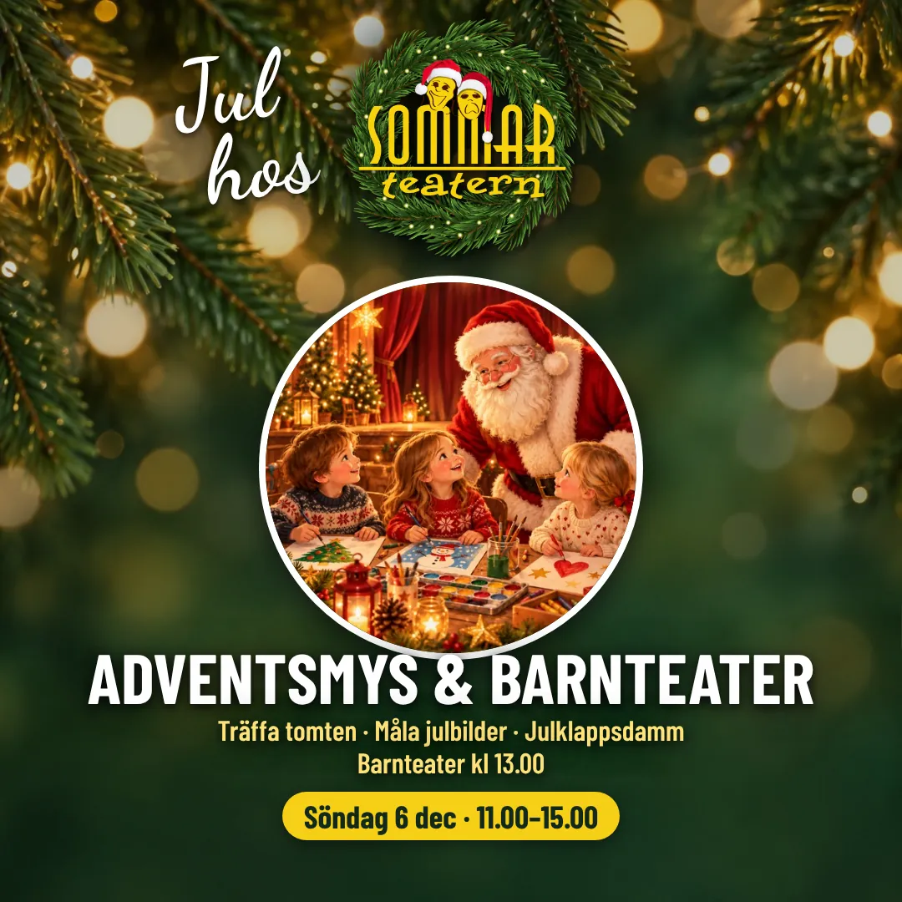
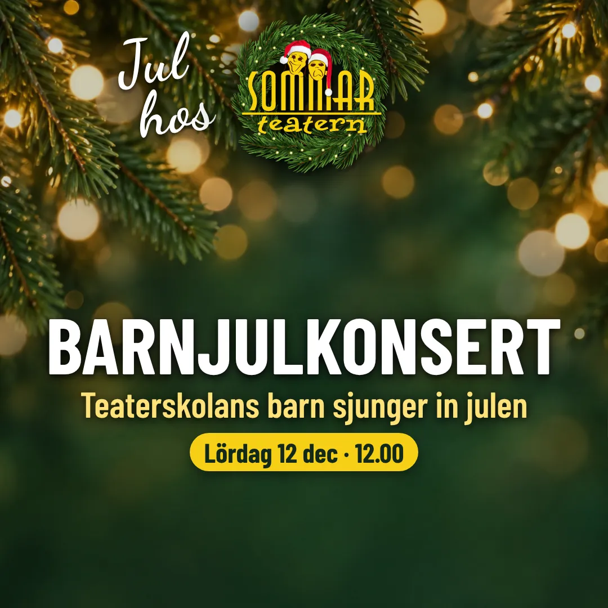
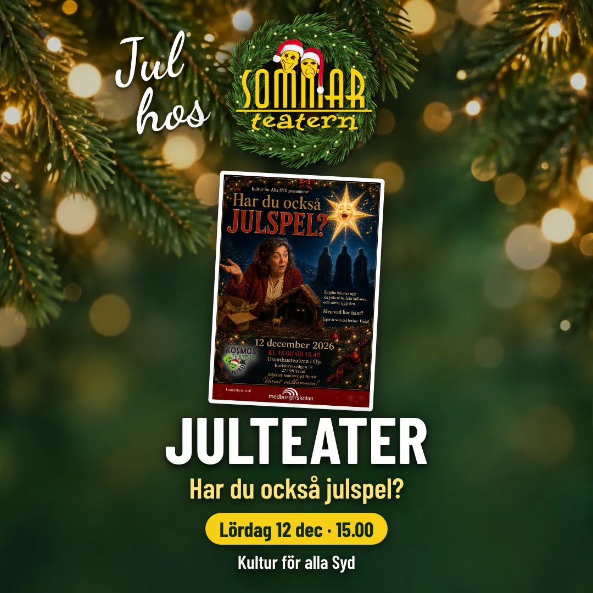

Lördag 5 dec · 16.00
Julkonsert NIMT
En kväll fylld av julmusik, värme och gemenskap i Öja.
Julen 2026
Julkonserter, barnteater och julspel i Öja — här hittar du alla program och biljetter.
Julkonserter, barnteater och julspel – kvällar och helgdagar fyllda av värme, musik och gemenskap. Biljetter köper du via knappen på respektive program.

En kväll fylld av julmusik, värme och gemenskap i Öja.

Träffa tomten · Måla julbilder · Barnteater 13.00 · Julklappsdamm

